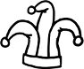

NATO Zirvesi boyunca dile gelmeden vücuda gelen, gündem maddesi olmadığı halde zirvenin her anını belirleyen, hem hepimizin malumu hem son tahlilde her birimize meçhul bir mevzu vardı: Protokol. Ne diplomasinin kodları, ne kültürel nezaket ne de sanıldığı gibi adabımuaşerettir protokol etiketinin altında yatan. Gülmeye getirilen sınırlamadır protokol. İnsanın kendi kendine ve başkalarına gülebilme yetisine getirilen sınırlama.
Beşer ikiye ayrılır. Kendilerine gülebilenler ve kendilerine gülünmesinden zerre kadar hazzetmeyenler. Kimin hangi kesimden olduğunu görmek için bir küçük kaza yeter de artar. Diyelim ki ayağınız takıldı, yere kapaklandınız olmadık bir yerde, "çekiniz" yazılı bir kapıyı var gücünüzle itip ittiğinizle kaldınız herkesin gözü önünde ya da fırlayıverdi takma dişiniz bir yemekte, ne olur ilk tepkiniz? Yere kapaklanan gururunuzu, kapıya toslayan fiyakanızı, ağzınızdan fırlayıveren endamınızı kaptığınız gibi toparlanır mısınız hemencecik, yani hiç bozmadan, bozuntuya vermeden, mümkün mertebe ve süratle kurtararak zevahiri devam mı edersiniz yolunuza, yoksa birkaç saniyeliğine de olsa durup, belki de kataklanıp, anın komikliğine, durumun biçareliğine salacak bir kahkahanız olur mu? Kendine gülebilir misin?.. Ama öyle olgun bir tebessüm lütfedercesine değil, içinde bir yerde sana seni yansıtan bir ayna, sana seni aktaran bir soytarı varmışçasına çekinmeden, tartmadan hem de herkesin ortasında, fütursuzca mesela? Dalga geçebilir misin kendinle, ciddiye alınmayı gaye edindiğin yerde?
Soytarının kültürümüzde yeri var mı?
Edebiyat, felsefe ve siyaset felsefesinin nice ismini büyüteç altına alan Jean Starobinski, Fransızca "alienation" kelimesinden yola çıkarak, gülmenin kültürel açılımlarına dair çözümlemeler yapar. Aklını yitirme, delirme anlamına gelir "alienation" kelimesi. Buna yakın "alterite" kelimesi ise "bir başkası olma"yı ifade eder. Starobinski, bu kavramsal akrabalıktan hareketle Batı kültüründe soytarının oynadığı role yakından bakmak gerektiğine inanır. Soytarı âdeta bir öte dünyadan, sahne dışındaki bir hayattan, ölüler âleminden ya da tuhaflıklar diyarından gelen biri, bir "başkası"dır. Amacı insanları güldürmek ve güldürürken onların da bir "başkası" olmasını sağlamaktır. "İnsan kendi varlığından sıyrılmayı, en kaba kılığa bürünerek yok olmayı, bu yok oluşu neşe içinde gerçekleştirmeyi, böylelikle yeni bir varlık olarak bir kez daha doğmayı başarmalıdır." Soytarı sadece tiyatro oyunlarında kalabalıklar karşısında değil, kral ve kraliçenin karşısında da aynı işlevi yerine getirmişti tarih boyunca. Bu suretle, iktidarın zirvesinde bulunan insanların da kendi kendilerine ve mevkilerine yabancılaşmasını, hatta açık açık kendilerine gülebilmelerini sağlamıştı.
Osmanlı'da soytarının işlevine en yakın uygulama "tebdil gezmek" idi. Tebdil gezdiklerinde padişahlar bir müddet için de olsa kendi kendilerine yabancılaşmak, bir başkası olmak fırsatını buluyorlardı. Ancak kendi taklidine gülen kral ile tebdil gezen padişahın ortak noktaları kendi kimliklerinden sıyrılabilmeleri olsa da bu durumun sonuçları hayli farklıydı. Padişah tebdil gezerken saray dışındaki hayatı teftiş etme amacı güdüyor ve kendi gözünde değil, sadece başkalarının gözünde bir başkası oluyordu. Oysa soytarının soytarılıklarına gülen ve sahnede kendi "gülünç" yanıyla yüzleşen kral, bizzat kendi gözünde kendisi olmaktan çıkıyordu. Daha açık bir ifadeyle, bizde yöneticiler kendilerine gülmeyi bilmedi, bilemedi. Ne dün ne bugün.
Günümüz dünyasının protokole bulanmış iktidar kodları evvela soytarıyı ve soytarının rolünü ortadan kaldırdı. Gülümsemek evet; ama kahkaha zinhar! Nezaket tebessümleri elbette; ama kendine gülebilmek hâşâ! Gülünecekse illaki onu da liderler kendileri yapardı elbet. İstedikleri esprileri istedikleri an sıralayarak, duruma her daim hâkim kalıp bir başkası olmanın, kendine dışarıdan bakıp yaptıklarını tiye, varlığını hafife almanın ayrıksı tadına asla varamadan. Bizde geçer akçe, her daim ağır olmak, ağır görünmektir. Keza sadece siyaset değil, edebiyat ve sanat söz konusu olduğunda da, yaratıcılık süreciyle illaki ciddiyeti, hâkimiyeti, melankoliyi özdeşleştiririz. Bir yazar ne kadar melankolik ve "bunalım" görünürse, o kadar ciddiye alınır, saygı uyandırır. Manik halleri tasvip etmez, rahatlığı beğenmeyiz. Siyasi ya da kültürel erk erbabı hiç fark etmez, benzerdir mayaları. Son tahlilde içten içe hâlâ gülmeyi bir utanç kaynağı, cezalandırılması gereken bir taşkınlık olarak gördüğümüz için, ne kendimizle dalga geçer ne de geçilmesinden hoşlanırız.
Sizin hiç soytarınız oldu mu bu kültürde?
Michigan